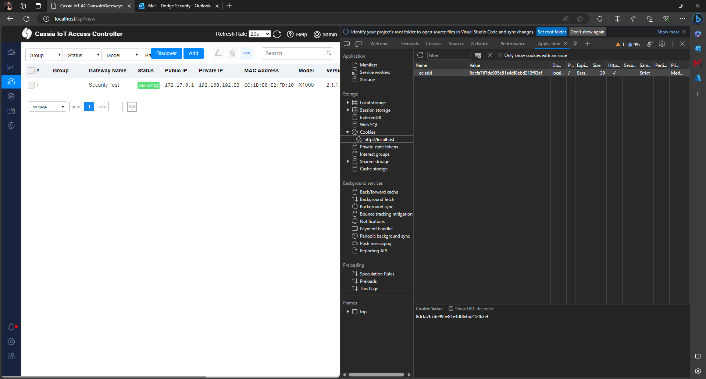

CVE-2023-35793-CSRF-On-Web-SSH
Repository contains description for CVE-2023-35793 discovered by Dodge Industrial Team for Dodge OPTIFY platfrom.
CVE ID: CVE-2023-35793
Vendor: Cassia Networks
Product: Access Controller
Version:
Cassia-AC-2.1.1.2303271039
Vulnerability: Cross Site Request Forgery (CSRF)
Affected: web ssh, gateways
Decription: WebSSH
functionality can be intialized by CSRF.
Status: Confirmed by vendor, Fixed
Version Patched:
Cassia-AC-2.1.1.2308181707
Details
Cassia uses WebSSH2 by billchurch to initiate SSH sessions from AC to Gateways. WebSSH2 Is a web SSH
Client which uses ssh2, socket.io, xterm.js, and express.
A bare bones example of an HTML5 web-based terminal emulator and SSH client. It uses SSH2 as a
client on a host to proxy a Websocket/Socket.io connection to a SSH2 server.
When a user is logged into AC it uses ac:ssid cookie with Same Site Strict cookie.

To Initiate SSH Web session with gateway users send GET request with mac and port number (reverse ssh) without CSRF token used.
http://<ac-ip>/ap/remote/<mac-addr>?ssh_port=9999
An attacker may trick user by sending him link address. This will trigger SSH session establishment by user (further it reveals that user can be just read-only).
Exploitation
Attacker may trick already authenticated user to click link provided in teams chat or email what will result in establishing conncetion to provided device.
1) User admin is doing some activities on AC:

2) Attacker knows admin email sends SE profiled message (or post it on ITSM ticket) embedding URL. Admin
then may click on link while his browser will start session
(note session is persistent - even when user close browser, the session will run already):
3) Session starts as there is no CSRF Token on other protection used!
AC sends request to Gateway with provided MAC address to establish reverse SSH
to AC
- the attacker may use local port forwading (used in solution) to remotely
bruteforce SSH access (can be easy when default passwords are used)

Remediation
- Patch to the highest possible version availaible on Cassia Networks